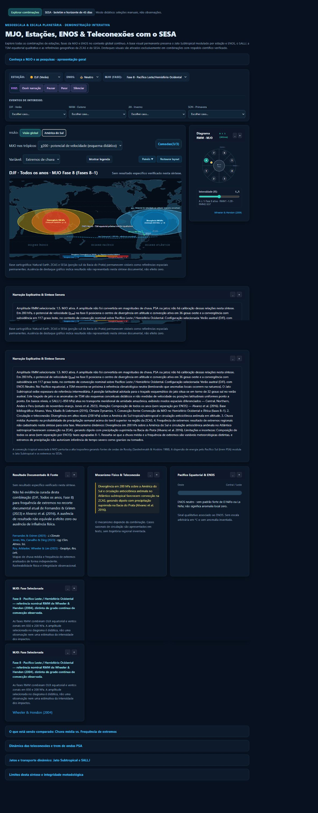
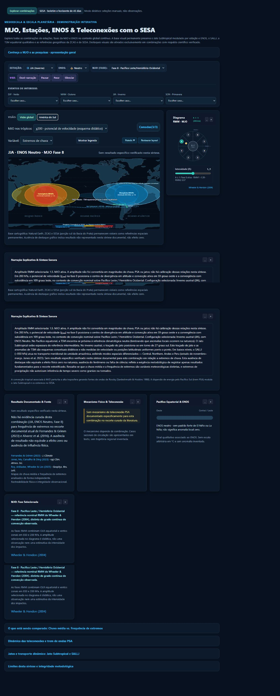
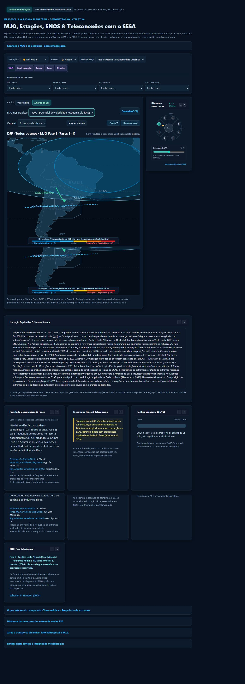
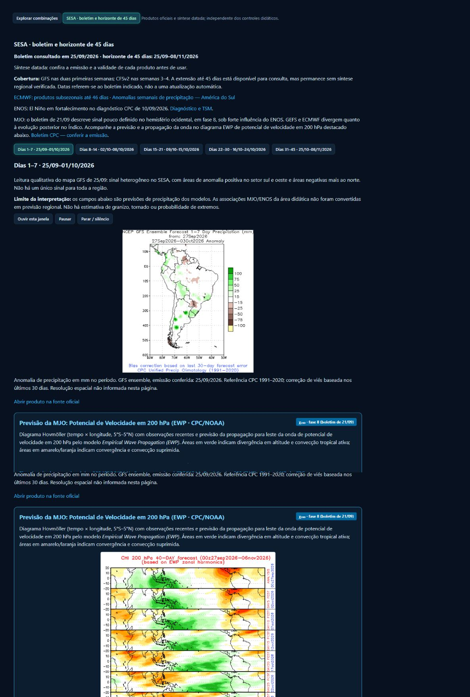
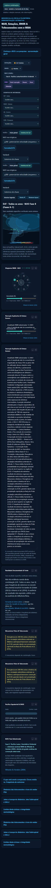

global_DJF_f1
Antes
Sem mudança visual nesta rodada.
Estado atual
Protocolo implantado no branch revisao. Conteúdo da demo preservado.
La Niña/DJF/fase 1: (a) manter cadastro novo sem o caso; (b) propor reinclusão com borda sul da ZCAS.
Teste legado: (a) autorizar atualização de verify-model.cjs; (b) manter falha registrada.
Abrir demo local · STATUS.md · Protocolo permanente
Sem mudança visual nesta rodada.
Sem mudança visual nesta rodada.

Sem mudança visual nesta rodada.

Sem mudança visual nesta rodada.

Sem mudança visual nesta rodada.

Sem mudança visual nesta rodada.

# STATUS ## Estado - Branch: revisao, criado do main; base e último commit existente na abertura deste registro: 3376bc9. - À frente/atrás do main na abertura: 0/0. Este registro será incluído no primeiro commit de acompanhamento; o hash desse próprio commit não pode ser embutido nele mesmo. - Data e hora: 2026-09-27T16:32:37-03:00. - Cópia local sem alterações ao iniciar; origin/main = main = 3376bc9. Novos commits do autor substituíram o cadastro anterior. Preservados integralmente. - Comparação com GitHub Pages: index.html: igual à publicação; documented-cases.js: igual à publicação; documented-view.js: igual à publicação; map-regions.js: igual à publicação; forecast-sesa.js: igual à publicação. ## Em andamento Implantação do protocolo concluída; aguardando decisão sobre o caso La Niña/DJF/fase 1, ausente do cadastro atual. ## Feito (nesta rodada) - Criado branch revisao a partir de main; nenhum arquivo da demonstração alterado nesta rodada. - Registrados protocolo e pendências: _revisao/PROTOCOLO.md e _revisao/STATUS.md. - Criado painel autossuficiente: _revisao/painel.html (atualização a cada 30 segundos). - Registradas seis capturas atuais em _revisao/capturas/. Sem mudança visual nesta rodada; não há capturas antes/depois diferentes. - Conferida geração textual de 288 combinações com o simulador DOM existente carregado em memória, sem alterar verify-model.cjs. ## Aguardando decisão do Reinaldo - Caso La Niña/DJF/fase 1 removido pelo cadastro atual: (a) manter a nova seleção de casos; (b) propor reinclusão com borda sul da ZCAS, submetendo texto e fonte à aprovação. Não reintroduzido automaticamente. - Teste legado falha em “ENOS válido” por não aceitar “todos”: (a) autorizar atualização de verify-model.cjs, fora da lista original de cinco arquivos; (b) manter falha registrada e validar por verificações independentes. - Lista antiga versus nova base: (a) auditar novamente os itens 4–9 na versão 3376bc9; (b) tratar primeiro apenas uma pendência escolhida. A nova base já contém sinais negativos e unificação CESA/ZCAS; não atribuir essas mudanças a esta rodada. - Nenhuma decisão científica pode ser inferida dos exemplos do protocolo. ## Fontes - Nenhuma afirmação científica nova foi acrescentada aos casos nesta rodada. - Afirmações científicas herdadas de 3376bc9: NÃO VERIFICADO nesta rodada; nenhum PDF foi aberto. Permanecem sujeitas à conferência de figuras/páginas. - PDFs de artigos devem ficar em C:\Users\haas\artigos\mjo-sesa\, nunca no repositório. ## Validações - 2026-09-27T16:32:37-03:00: console do navegador sem erros capturados durante a inspeção local. - 2026-09-27T16:32:37-03:00: narração textual 288/288 (4 estações × 3 ENOS × 8 fases × 3 variáveis); texto não vazio, sem undefined/NaN. Não valida conteúdo científico nem áudio real. - 2026-09-27T16:32:37-03:00: celular 360/390/414 sem transbordamento horizontal detectado; captura em 390. Isso não constitui auditoria completa de acessibilidade/legibilidade. - 2026-09-27T16:32:37-03:00: verify-model.cjs FALHOU em “ENOS válido”, antes dos demais testes. Não alterado. - Capturas: seleção manual ENOS neutro, extremos, amplitude 1,5; títulos podem indicar “todos os anos” por resultado agregado da nova base. Global DJF f1/f8; global JJA f8; regional DJF f8; boletim; celular390. Até 1200 px de largura. - Reprodução sonora, pausa e retomada reais: NÃO TESTADAS nesta rodada. ## Decisões registradas - 27/09/2026: trabalhar sempre em revisao; commit/push autorizados nesse branch. Main somente após Reinaldo dizer “aprovado”. - 27/09/2026: acompanhamento por STATUS, painel e capturas a cada item; cache-busting somente ao fechar lote aprovado. - Aprovações anteriores nesta conversa: centralizar referências nominais MJO; retirar comparação “para leste” de DJF-El Niño-f8; separar envelope equatorial e fonte subtropical; âncora CESA em [-45,-12]; preferência aprovada por borda sul da ZCAS para La Niña/DJF/f1. - Essas aprovações anteriores não foram reaplicadas sobre a versão mais recente sem revisão das diferenças. - CESA=ZCAS, SESA=Bacia do Prata e agrupamento DJF/MAM→nov–mar, JJA/SON→mai–set aparecem na base ou nos exemplos recebidos: registrados como contexto herdado, não como novas aprovações científicas desta rodada.